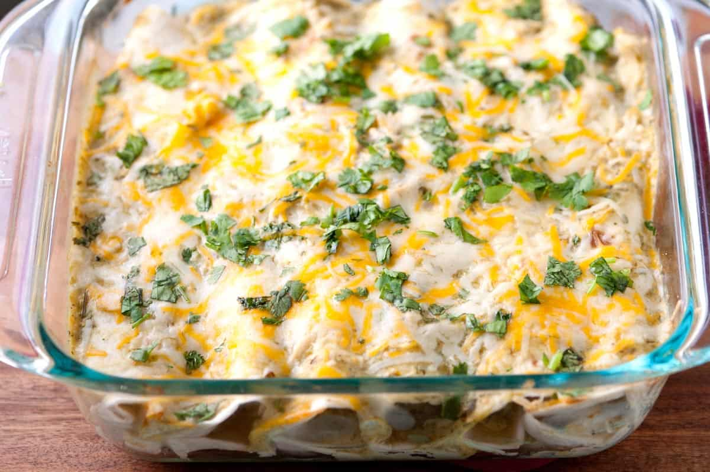

My Favorite Things
by Carter Waldhart
My Favorite Recipe
Chicken Enchiladas

Ingredients
- Chicken
- Green Enchilada sauce
- Tortillas
- Garlic
- Sour Cream
- Cheese
Instructions
- Preheat your oven to 350°F (177°C). Grease a 2-quart baking dish.
- Spread half of the reserved sauce on the bottom of the dish.
- Place 1/3 cup of the chicken filling in the center of each tortilla. Roll into a cylinder. Arrange rolled tortillas seam-side down in the baking dish.
- Spread the remaining reserved sauce over the enchiladas. Sprinkle with the rest of the cheese.
- Cover with foil and bake for 15 minutes. Then, remove the foil and bake until the cheese is melted and bubbly, about 10 minutes.
- Allow the enchiladas to cool for 5 to 10 minutes so they set up a bit in the middle. Garnish with cilantro and serve.